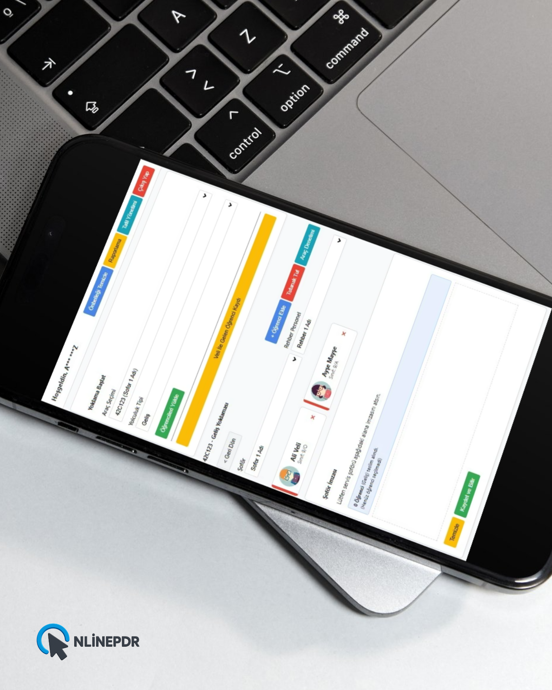

Okul Servis Operasyonunuzu Dijitalleştirin
Sunucu maliyeti yok. Kurulum derdi yok. MEB uyumlu raporlama ve güvenli öğrenci takibi için okul idarecileri tarafından tasarlandı.
Neden Bu Sistemi Seçmelisiniz?
Manuel listeler ve kağıt israfına son verin. Google Workspace altyapısı ile güvenli ve hızlı çözüm.
Sunucu Maliyeti Yok
Sistem tamamen Google altyapısı üzerinde çalışır. Ekstra hosting, domain veya sunucu bakım ücreti ödemezsiniz.
MEB Uyumlu Raporlar
Tek tıkla resmi yazışmalara uygun, ıslak imza için hazırlanmış aylık "Takip" çizelgeleri oluşturun.
İdare Odaklı Denetim
Sistem, okul yönetiminin servisleri denetlemesi, eksiklikleri görmesi ve hukuki sorumluluğu yönetmesi için tasarlanmıştır.
Teknik Özellikler ve Avantajlar
- Mobil Uyumlu Arayüz: Öğretmenler cep telefonundan kolayca yoklama alabilir.
- Akıllı Hafıza: "Veli ile Gelen" modülü, listede olmayan öğrencileri hatırlar.
- Otomatik Tatil Modülü: Resmi tatillerde sistem otomatik kapanır, uyarı vermez.
- Eksik Veri Kontrolü: Yoklama girilmeyen araçları otomatik tespit eder ve mail ile bilgilendirir.
